| SOURCE | TITLE| IMAGE MATCH | click to source page |
| Amazon.com | Amazon.com: Italy 1220,1221-1222,1223, 1224-1225 (Complete.Issue.) 1967 Geography, Rome, Toscanini, Europe (Stamps for Collectors) Music/Dance : Toys & Games | 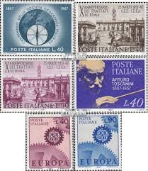 |
| Mussolini giving the 'Roman Salute' infront of a statue of Augustus Caesar, 1935 In 1935, Benito Mussolini stood before a statue of Augustus Caesar and gave the Roman salute, a gesture he | 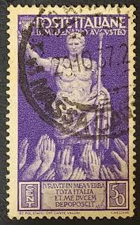 | |
| eBay | D259753 Italy VFU Sc.382 Bimillenary Birth Emperor Augustus Caesar | eBay | 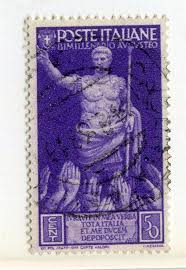 |
| eBay | ITALY 50 CENT 1941 STAMPED POSTAGE STAMP OF MUSSOLINI AND HITLER,HELMETED,Descri | eBay |  |
| Amazon.co.uk | Prophila Collection Italy 1107-1112 (complete.issue.) 1961 Agreement Italy (Stamps for collectors) : Amazon.co.uk: Toys & Games | 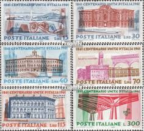 |
| eBay | R- 1879-1959 Italy stamps on album sheets - 85 total on 4 sheets | eBay | 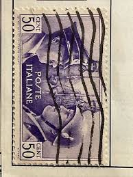 |
| vividagallery.com | Italy Constitution Tax Contribution Civic Duty Magenta Stamp Framed Print by Vivida Photo - Vivida Photo | 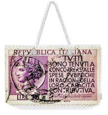 |
| eBay | WWII Used Italian Stamps for sale | eBay | 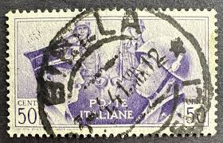 |
| Dreamstime.com | Postage Stamp Printed in Italy Shows High Values, Serie, 10000 - Italian Lira, Circa 1983 Editorial Photography - Image of retro, vintage: 171683192 | 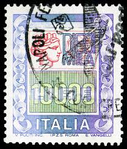 |
| Shutterstock | Italy Circa 1937 Stamp Printed Italy Stock Photo 111163643 | Shutterstock | 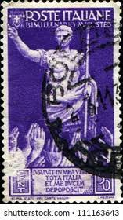 |
| Stamp Community Forum | Statues On Stamps - Page 2 - Stamp Community Forum | 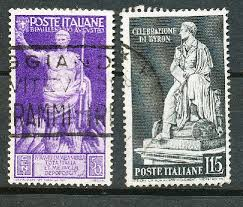 |
| eBay | Art, Artists Used Postage Italian Stamps for sale | eBay | 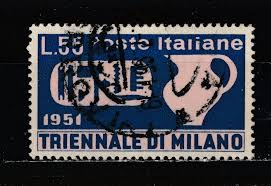 |
| MAXXI | Museo nazionale delle arti del XXI secolo | REAL_ITALY | MAXXI | 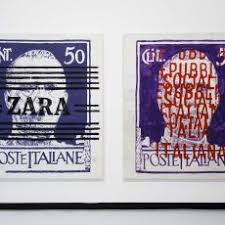 |
| On the Ridge Stamps | Classic Stamps - Eritrea 1923 Sc 70 used Asmara cancel - On the Ridge Stamps | 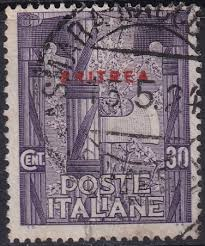 |
| Stamp Community Forum | Find This? Italian - Stamp Community Forum | 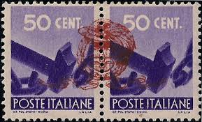 |
| eBay | 1944 ITALY POSTAGE DUE Repubblica Sociale Italiana SEGNATASSE Sass#66 MLH VF | eBay | 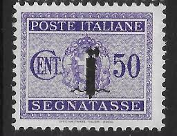 |
| Wikimedia.org | File:ITA 1933 MiNr0450 pm B002.jpg - Wikimedia Commons | 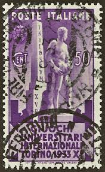 |
| eBay | High Values Lire 2,000 Double Variety | eBay | 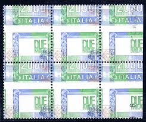 |
| yayimages | Postage stamp Italy 1932 Garibaldi at Battle of Calatafimi by Boris15 Vectors & Illustrations with Unlimited Downloads - Yayimages | 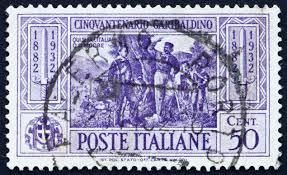 |
| Amazon.com | Amazon.com: Italy 950 (Complete.Issue.) unmounted Mint/Never hinged ** MNH 1955 fao (Stamps for Collectors) : Toys & Games | 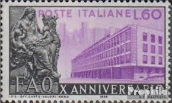 |
| eBay | Purple Italian Stamps for sale | eBay | 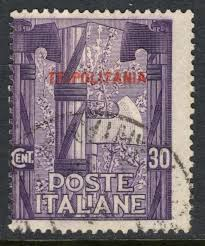 |
| Todocolección | italia, 1976, ischia. . - Buy Antique stamps of Italy on todocoleccion | 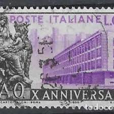 |
| HipStamp | Italy Sc#905 Used, 30L pur, 20th Anniversary of Resistance (1965) | Europe - Italy, General Issue Stamp / HipStamp | 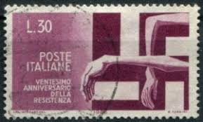 |
| eBay | Italy Kingdom 1935-42 Small Lot of 3 Travelled Covers with different nice stamps | eBay | 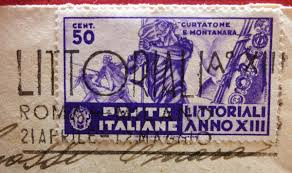 |
| Alamy | ITALY - CIRCA 1936: a stamp printed in the Italy shows Map of Italian Industries, 17th Milan Trade Fair, circa 1936 Stock Photo - Alamy | 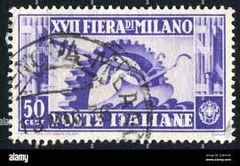 |
| eBay | 1944 ITALIAN SOCIAL REPUBLIC STAMP #4 WITH MAGGIORE BULLSEYE CANCEL | eBay | 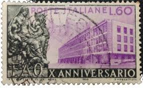 |
| eBay | EAS STAMPS Italian Colonies #129-#132 ERITREA MH fresh color SCV $26.00 CR EST | eBay | 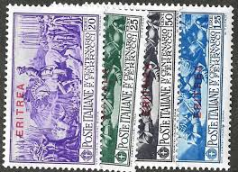 |
| old italian post marks | 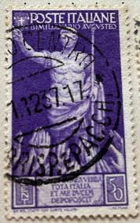 | |
| Find Your Stamps Value | Venice Crowned by Glory,” by Paolo Veronese 15l Deep ultramarine stamp price, value | 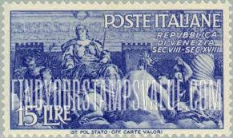 |
| Stamp Auction Network | Spink Shreves Galleries Sale - 125 Page 69 | 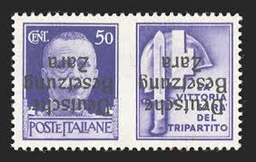 |
| Stamp Auction | Daniel F. Kelleher Auctions, LLC Sale - 702 Page 26 | 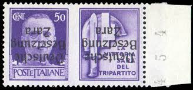 |
| Find Your Stamps Value | Value of segnatasse posta fiume cente stamps | 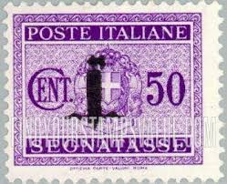 |
| eBay | Italy 1935 #347 Leonardo da Vinci - F Used | eBay |  |
| eBay | 1926 Kingdom D' Italy 40 Cent VII Centenary Franciscan | eBay | 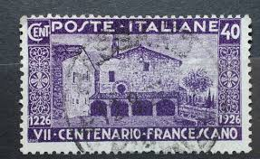 |
| Blogger.com | Big Blue 1840-1940: February 2013 | 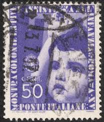 |
| Mesa Stamps | Authorized delivery stamp | 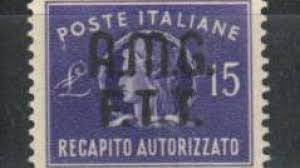 |
| Flickr | italian stamp 1.00 lire airmail Italy timbre Italie Posta … | Flickr | 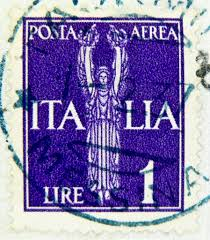 |
| eBay | 1935 Italy Sass#386 USED🔥LEONARDO DA VINCI 🔥 | eBay | 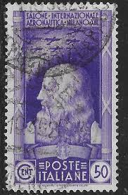 |
| Etsy | Vintage Italian Postage Stamp Italy Trieste SC 009 Allied Military Government - Etsy | 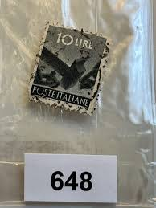 |
| GetArchive | 5 Adolf hitler and benito mussolini on stamps Images: PICRYL - Public Domain Media Search Engine Public Domain Search | 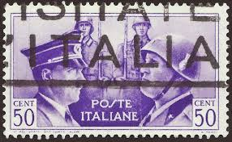 |
| Amazon UK | Prophila Collection Italy 2828 (complete.issue.) 2002 Postage stamp - ITALIA (Stamps for collectors) : Amazon.co.uk: Toys & Games | 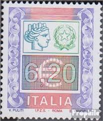 |
| Find Your Stamps Value | Value of italy segnatasse 50 centesimi stamps | 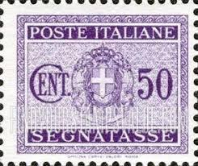 |
| eBay | ITALY 1950 1952 THREE COMPLETE USED SETS Sc 579 80 533 534 572 573 FINE VERY FIN | 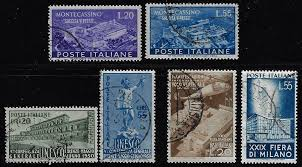 |
| common stamps? IX 스d크라 SEC AST STATO OFF CARTE CARTEVAR Puts POSTE ITALANE 5LRE | 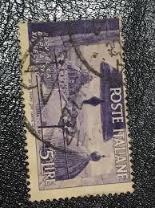 | |
| eBay | 1951 ITALY #578-80 MONTECASSINO ABBEY - WMK 277 - USED - VF - CV$51.90 (E#1464) | eBay | 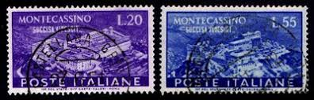 |
| HipStamp | Italy 416: 50c Mussolini and Hitler, used, VF | Europe - Italy, General Issue Stamp / HipStamp | 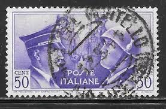 |
| Find Your Stamps Value | Value of poste italiane green 5 stamps | 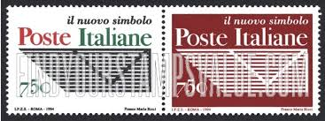 |
| eBay | Poste Italiane ~ King Victor Emmanual III ~50¢ Violet Stamp ~ Posted/Used ~1929 | eBay | 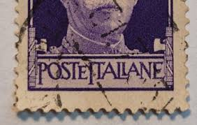 |
| Alamy | Hitler mussolini stamp hi-res stock photography and images - Alamy | 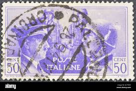 |
| eBay | Italy 1923 stamps commemorative USED Sas 142 CV $15.40 180506124 | eBay | 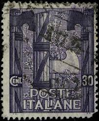 |
| iStock | Old Postage Stamp From Italy Stock Photo - Download Image Now - Close-up, Collection, Color Image - iStock | 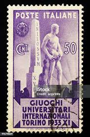 |
| vremeplov.ba | Stamps – VREMEPLOV | Istorija željeznica u Bosni i Hercegovini | 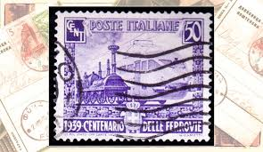 |
| HipStamp | Stamp Europe Italy 1941 Hitler & Mussolini A235 sc#413 &415, A236 sc#416 | Europe - Italy, General Issue Stamp / HipStamp | |
| 意大利早期邮票| 二手- 成色好| MOP4,000.00 | Macao, Ilhas | ||
| owlsandbooks.co.uk | BOOK STAMPS ITALY | |
| Todocolección | sello italiano. la fucina. 50 cent. año 1850. u - Buy Antique stamps of Italy on todocoleccion |  |
| Alamy | ITALY - CIRCA 1965: a stamp printed in Italy shows map of Italy with Milan-Rome highway, circa 1965 Stock Photo - Alamy | |
| Shutterstock | Italy Circa 1944 Stamp Printed Italy Stock Photo 90569539 | Shutterstock | |
| eBay | Italy Scott # 505 VF Used 1948 50 Lira Centenary of 1848-9 Uprisings | eBay | |
| HipStamp | Italian Offices Abroad SC 382, 384 VFU (6cuv) | Europe - Italy, General Issue Stamp / HipStamp |
{kind=link}